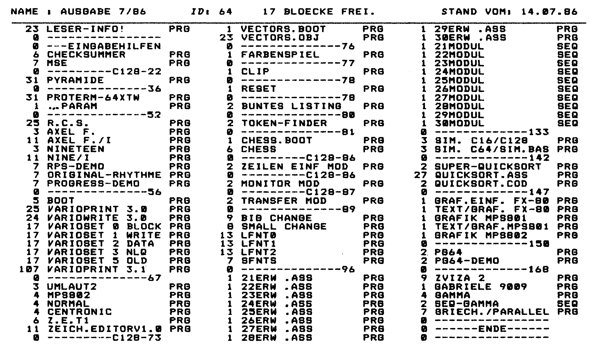

Directory unter Druck
Übersicht in der Programmsammlung läßt sich mit »Catalog Printer+« schaffen, dem idealen Programm zum Ausdrucken umfangreicher Directories.
Wer sich schon einmal mit »LOAD"$",8« durch Hunderte von Disketten gesucht hat, nur um ein einzelnes Programm zu finden, wird erleichtert das folgende Listing abtippen. »Catalog Printer+« druckt ganz sauber und übersichtlich Ihre Directories auf einem Epson-Drucker. Einen Beispielausdruck in Originalgröße zeigt Bild 1.

Ein ähnliches Programm konnten Sie schon im Sonderheft 2/86 finden, doch das dortige Listing wurde für dieses Sonderheft von einem Leser total überarbeitet und sehr stark verbessert. Die neue Version arbeitet wesentlich schneller und berücksichtigt auch schreibgeschützte Files.
Nach dem Programm-Start wird in Zeile 30 und 40 überprüft, ob ein Drucker angeschlossen ist. Das Programm ist auf Epson-Drucker der Serien RX und FX sowie Kompatible ausgelegt. Für andere Drucker müssen Sie wahrscheinlich Änderungen in den Zeilen 610 und 620 vornehmen. Damit das Programm mit Druckern funktioniert, die keine Kleinschrift auf dem Drucker ausgeben können (MPS 801, 802, 803, und ähnliche), wären umfangreiche Änderungen im gesamten Listing notwendig. Dann wäre auch nur ein ein- oder zweispaltiger Druck möglich. In der abgedruckten Version ist das Programm nicht mit diesen Druckern lauffähig.
Nach der Überprüfung auf angeschlossenen Drucker meldet sich dann ein Menü, von dem aus Sie mit den Funktionstasten die einzelnen Programmteile starten können. Um die Directories mit der richtigen Anzahl belegter Blöcke auszugeben, ist es möglich, vor dem Ausdruck zu validieren, das heißt die Diskette »aufzuräumen«. (Genaue Informationen zum Validieren finden Sie im Floppy-Kurs in diesem Sonderheft.)
Mit Druck auf <RETURN> oder <F1> wird erst einmal nach dem Tagesdatum gefragt und dann der Ausdruck des Directorys begonnen. Je nach Anzahl der Einträge kann es ein- bis dreispaltig werden. Das ausgedruckte Directory läßt sich nun beispielsweise ausschneiden und auf die Papierhülle der Diskette kleben. Damit hat man schnelle Übersicht über den kompletten Disketteninhalt, ohne ein Directory umständlich laden zu müssen.
(Herbert Kaufhold/bs)